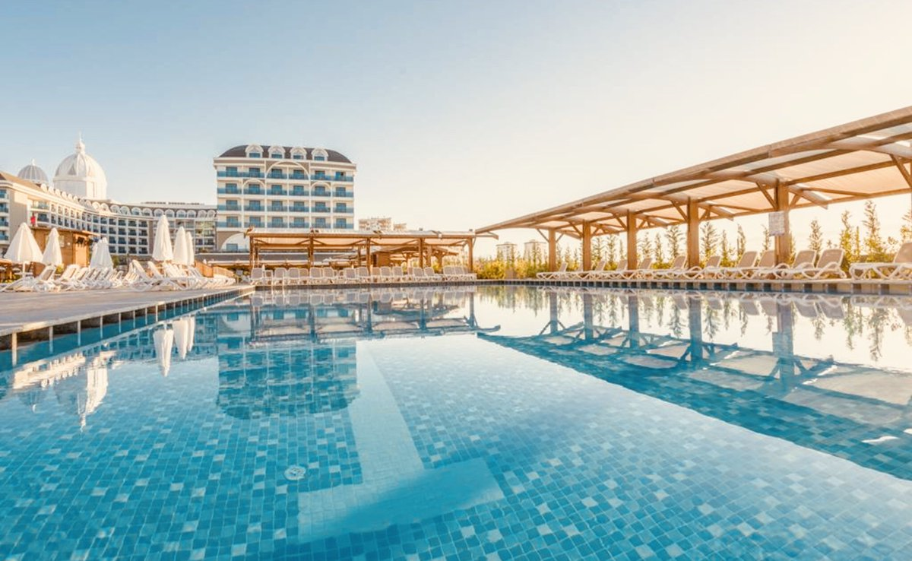

Преимущества отеля
| Подогреваемый бассейн |
Детская анимация |
СПА |
|  |
|
|
Об отеле
Спа-отель "Vesna" располагается в Сочи – курортном
городе, который покоряет своей красотой и теплотой.
Гостиница имеет очень удобное месторасположение. Дорога до моря не займет у вас более 5 минут (200 метров). В 20 минутах –
олимпийский парк и трасса Формулы 1.
В шаговой доступности самый большой Океанариум, террариум и дельфинарий. Вы сможете
посетить курортный городок, рестораны, бары, находящиеся совсем рядом.
До Hotel Vesna легко добраться как с ЖД вокзала (2,5 км), так и международного аэропорта Сочи (4,5 км). Имеется парковка на
территории, на которой гости смогут оставить свой автомобиль на время отдыха.
Вас ждет вид на море, горы и прогулочный парк, который сделает ваше утро незабываемым!